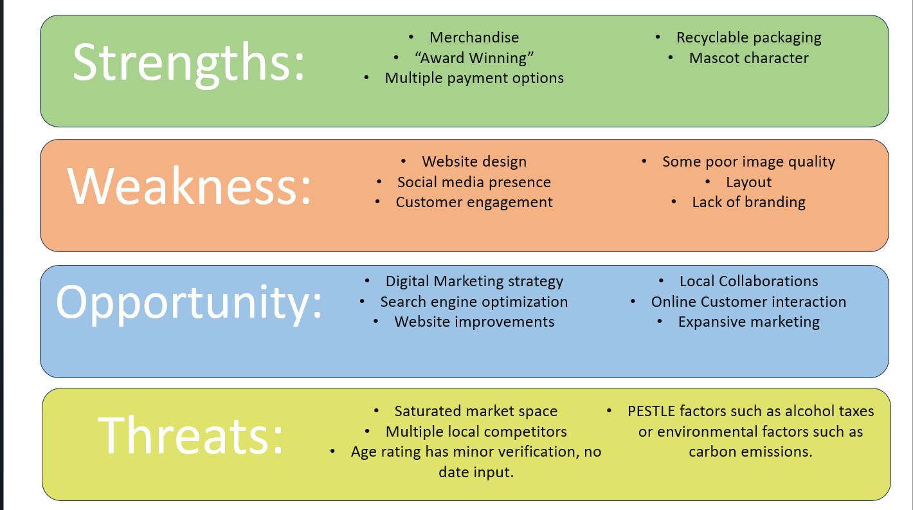
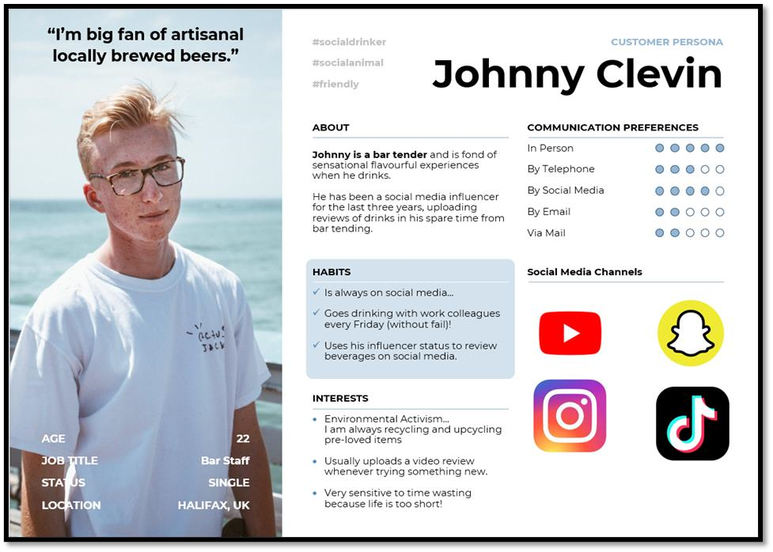

A marketing-analysis project examining social media, SEO, audience targeting and digital customer journeys for a brewing company.
Research and recommendations
The report identified opportunities around stronger social-media links, search optimisation and more connected journeys between social profiles and the company website. It also used SWOT and PESTLE analysis to consider environmental, social and market factors.
Skills demonstrated
SEOSocial mediaSWOT / PESTLEAudience research
A digital marketing audit
For my Social Media Marketing module, I analysed Three Fiends, a craft brewing company, and developed recommendations for its online presence. The report looked at its website and customer journey alongside local competition and wider market conditions. It was an academic analysis and proposal, not a campaign I implemented for the company.

The SWOT diagram from the finished report.
Finding the gaps
I used SWOT and PESTLE frameworks to organise the research. The SWOT work identified existing strengths such as merchandise, flexible payment options and packaging, but also opportunities to improve the site layout, image quality, branding and social presence. The report considered a crowded craft beer market, local competitors and the rules and environmental pressures affecting alcohol brands.
One practical issue was the gap between the website and social accounts. A customer arriving through a post should be able to reach the products, while someone browsing the site should be able to find the brand's ongoing updates. I recommended clearer cross-links, more focused search terms and a smoother route between discovery and purchase.

A fictional customer persona used to explore audience and channel choices.
Audience and action
I created a customer persona to make the audience less abstract and considered how local reviewers and small creators might introduce the product to relevant communities. The report then set out objectives, tactics, actions and ways to check whether the changes were working. Its main recommendations were to strengthen the website, make social links genuinely useful and base future decisions on customer behaviour rather than assumptions.
The newsletter design shown in the project media sits alongside that analysis as a possible direct communication format. Together, the research and visuals show how I approached a real business brief: study the existing journey, find the weak points and suggest changes that could be measured later.